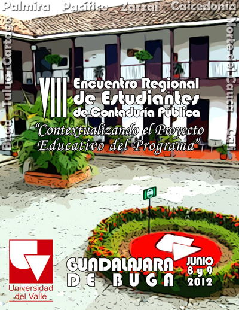

El VIII Encuentro Regional de Estudiantes del Programa Académico de Contaduría Pública de la Universidad del Valle, construido a partir de los lineamientos trazados en el Plan de Mejoramiento que busca mantener la acreditación de calidad del mismo Programa; pretende generar un espacio para la integración de la Comunidad Académica a nivel Regional para la cual cumple su misión; posibilitando el desarrollo de una actividad integradora entre los estudiantes de la Sede Cali y las ocho Sedes Regionales que cuentan con el Programa Académico de Contaduría Pública. El enfoque de este Encuentro busca aportar a la construcción de los cimientos sobre los cuales, en un futuro y conjuntamente, se formule un plan de trabajo que permita fortalecer una identidad de región, por medio de la socialización de las problemáticas socioeconómicas, políticas y culturales que caracterizan el Departamento y que permitan identificar y plantear las posibles soluciones que desde la profesión contable aporten al desarrollo del Valle del Cauca y su visión global.
En este sentido, la Presente versión del Encuentro de Estudiantes, se construye en función de la discusión y argumentación del Proyecto Educativo del Programa que servirá de fundamento para el desarrollo de la Reforma Curricular del mismo, en la búsqueda por orientar a la Contaduría Pública como práctica que se vincule en la búsqueda del bienestar social y la transformación de la realidad regional.
Contextualizar el Desarrollo Regional del Proyecto Educativo del Programa Académico de Contaduría Pública.
* Propiciar la reflexión crítica alrededor de las temáticas que fundamentan el PEP del Programa Académico de Contaduría Pública.
* Articular una visión global del Programa Académico de Contaduría Pública con incidencia directa en el ámbito regional.
* Generar la discusión de las temáticas que serán abordadas en la Reforma al Currículo del Programa Académico de Contaduría Pública.
La Dirección del Programa dará apertura a una convocatoria en las diferentes Sedes Regionales de la Universidad del Valle para la definición de posturas criticas frente al Proyecto Educativo del Programa (PEP); para el cumplimento de este fin, se espera que los estudiantes elaboren Ensayos sobre las temáticas que sean de su interés y que estén directamente relacionadas con la construcción del PEP; como incentivo a los ensayistas clasificados se otorgará el cubrimiento de la inscripción al evento; el Ensayo que el Comité Académico, después de la respectiva sustentación, elija como el mejor, se propone que reciba una suscripción a la Revista Cuadernos de Administración por tres publicaciones.
La metodología a desarrollar durante el “VIII Encuentro Regional de Estudiantes de Contaduría Pública de la Universidad del Valle” se basará en la organización de Comisiones de trabajo en las que se analizarán y discutirán temas relacionados con el Proyecto Educativo del Programa, logrando una interrelación y retroalimentación entre los docentes, los directivos y los estudiantes que finalmente contribuya a la socialización y la apropiación de dicho Proyecto Educativo, al tiempo que se incentive a los estudiantes a hacer parte de los procesos académicos que se construyen al interior del Programa.
Los mejores ensayos serán expuestos en el primer día de actividades al interior de cada una de las tres comisiones a saber: Comisión de Formación y Currículo, Comisión del Conocimiento Contable y Comisión de Globalización y Contexto; que han sido previamente visualizadas en la construcción del PEP. Posteriormente el Comité Académico presentará un balance de lo sucedido al interior de cada comisión en la Plenaria del Encuentro.
La tarifa de inscripción será equivalente a sesenta mil pesos ($60.000) para pagos antes del 16 de Mayo y setenta mil pesos ($70.000) hasta el 1 de Junio; dicha tarifa contemplará el derecho a participar en todos los espacios académicos y culturales del evento, alojamiento, alimentación y refrigerios, materiales de trabajo (escarapela, lapicero y libreta de apuntes), camiseta y certificado de asistencia.
Descargue la agenda del evento aquí.
En vista de que en las Conferencias centrales se espera la participación de al menos 500 estudiantes de todas las Sedes Regionales, se propone su realización en el Teatro Municipal de Buga "Ernesto Salcedo Ospina"; dicho Teatro es considerado como una joya arquitectónica de principios del siglo pasado que permaneció cerrado por más de 15 años y hoy gracias a una inversión de la Administración Municipal, está a nuestra disposición para la realización de este evento que paralelo a ser una actividad académica aportará a la apropiación del patrimonio cultural de departamento.
El Teatro Municipal “Ernesto Salcedo Ospina” tiene una capacidad aproximadamente para quinientas personas y una excelente acústica, su forma interna es circular, posee una hermosa sala de palcos soportados en columnas de madera; los barandajes con lindas aplicaciones de madera, divididos en cubiles cada uno con su puerta de ingreso y sus butacas, una platea grande con sus butacas, una galería amplia, con grandes escenarios, pasillos circulares dotados con amplias escaleras, camerinos, sótano, zona de taller, foro, foso de orquesta y de escenario, concha de apuntador, bastidores, telón de boca y fondo, salidas de emergencia, entre otras.
El préstamo del Teatro, ya ha sido concertado con la respectiva Administración Municipal de Buga y, en consecuencia gracias a la gestión realizada por el comité organizador del presente evento, su préstamo será gratuito.
En este mismo sentido, el trabajo en Comisiones se desarrollará al interior de las instalaciones de la Universidad del Valle – Sede Buga; que en los muros de la Capilla conserva aún las decoraciones murales; a través de la historia, se ha conocido esta edificación como: Colegio Mayor de Buga, Colegio de los Jesuitas, Colegio Académico y hoy Universidad del Valle; la construcción de la Sede, aporta por si misma un contenido histórico al desarrollo del Encuentro.
Con el ánimo de propiciar un espacio cultural que facilite la construcción de Redes entre los estudiantes, la agenda cultural se desarrollará en las Instalaciones de Comfenalco - Valle Club Guadalajara en el que cual contamos con cómodos y adecuados espacios para el descanso, la recreación y el deporte.
Hacemos extensiva una invitación a participar del VIII Encuentro de Estudiantes de Contaduría Pública de la Universidad del Valle, enviando sus ensayos sobre el Proyecto Educativo del Programa, para participar de cualquiera de las comisiones arriba planteadas; los requisitos son los siguientes:
* Los trabajos deben ser originales e inéditos.
* Los trabajos serán presentados en archivo con formato de documento Word 2003, fuente Arial, tamaño 12 puntos, con una extensión máxima de 6 seis páginas, sin contar las referencias bibliográficas. Los documentos que no cumplan estos requerimientos serán descartados.
* Los Ensayos deberán presentarse de forma electrónica enviando un email remisorio en el cual se indiquen explícitamente los siguientes datos: seudónimo, nombres y apellidos completos, comisión a la que se dirige, dirección, ciudad, teléfono fijo y celular, correo electrónico y Sede. Adicionalmente el ensayo se remitirá en archivo adjunto y solo será identificado con su título, comisión y seudónimo del participante.
* La fecha límite de recepción de Ensayos es el 01 DE JULIO DE 2012. Todas los ensayos deben ser remitidas únicamente a los siguientes email: contadur@univalle.edu.co – reacreditacioncp@gmail.com.